Oh. So. Pro.
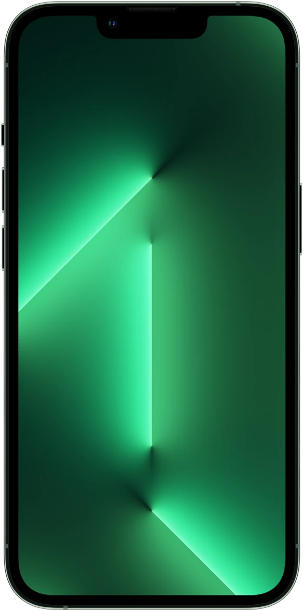
iPhone 13 Pro Max
6.7"
iPhone 13 Pro
6.1"
Super Retina XDR display with ProMotion
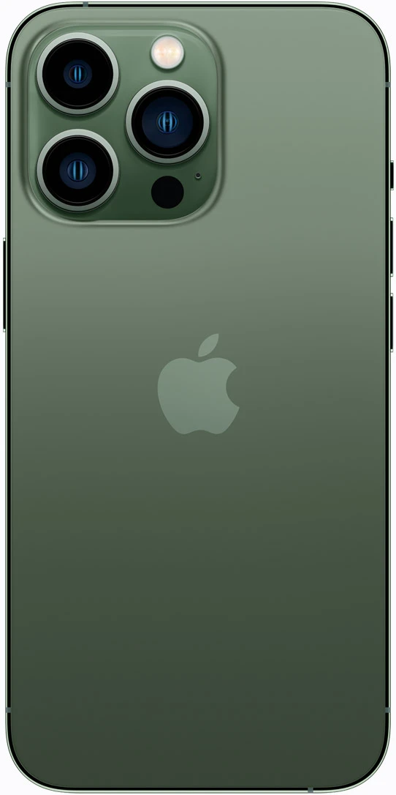
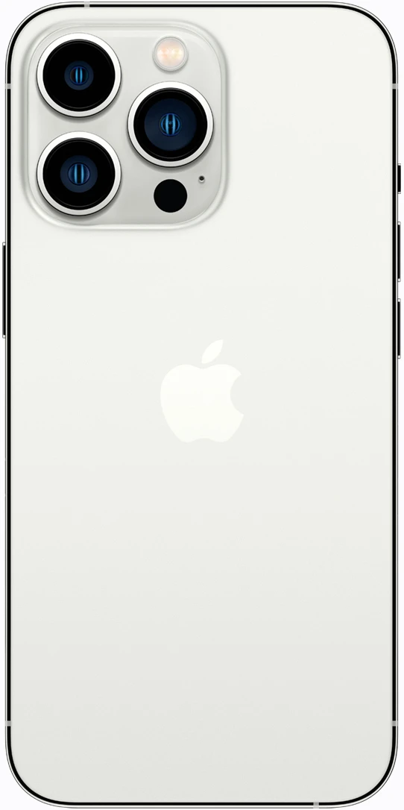
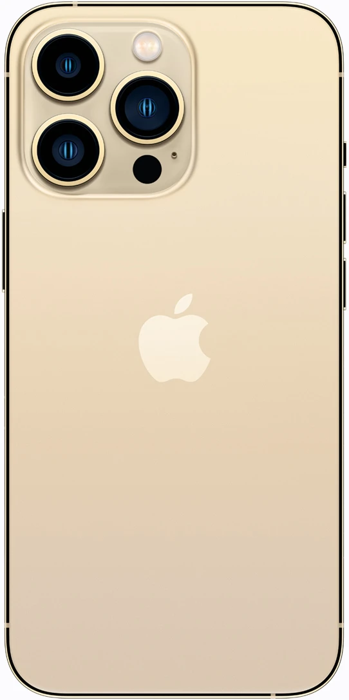
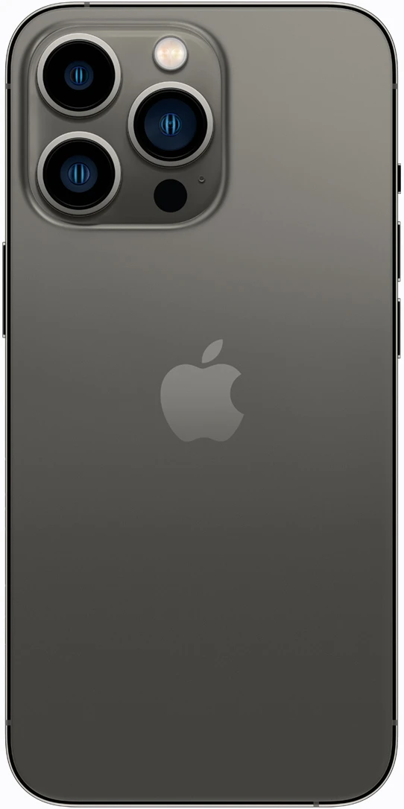
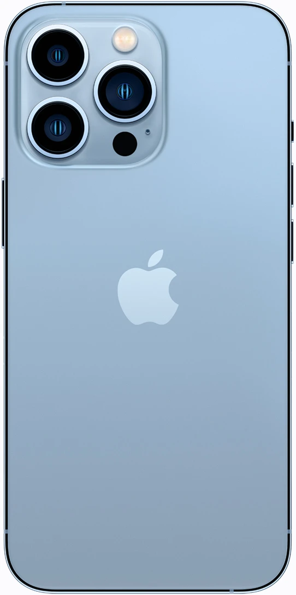
Alpine Green
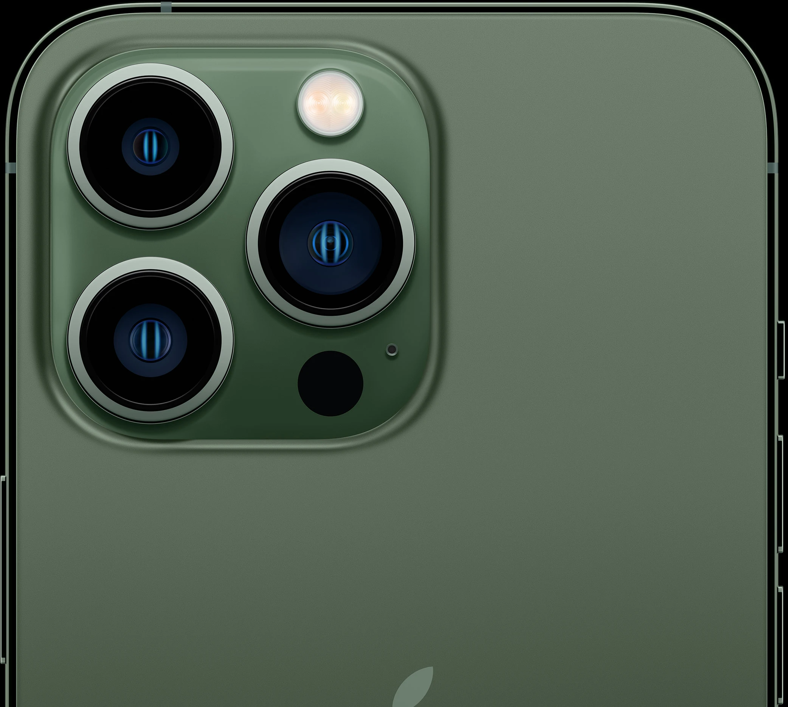
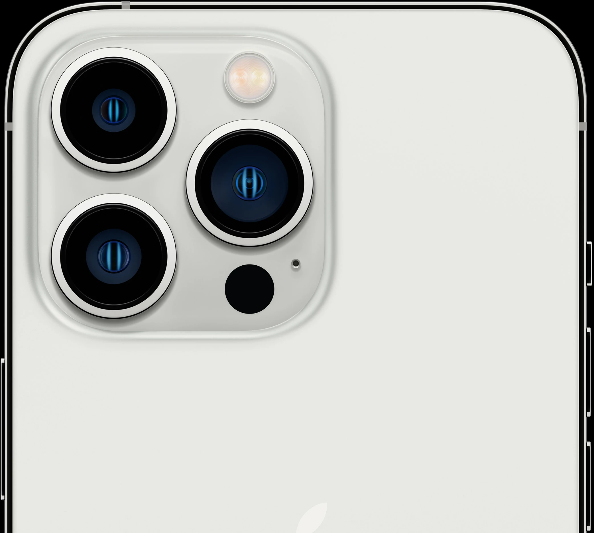
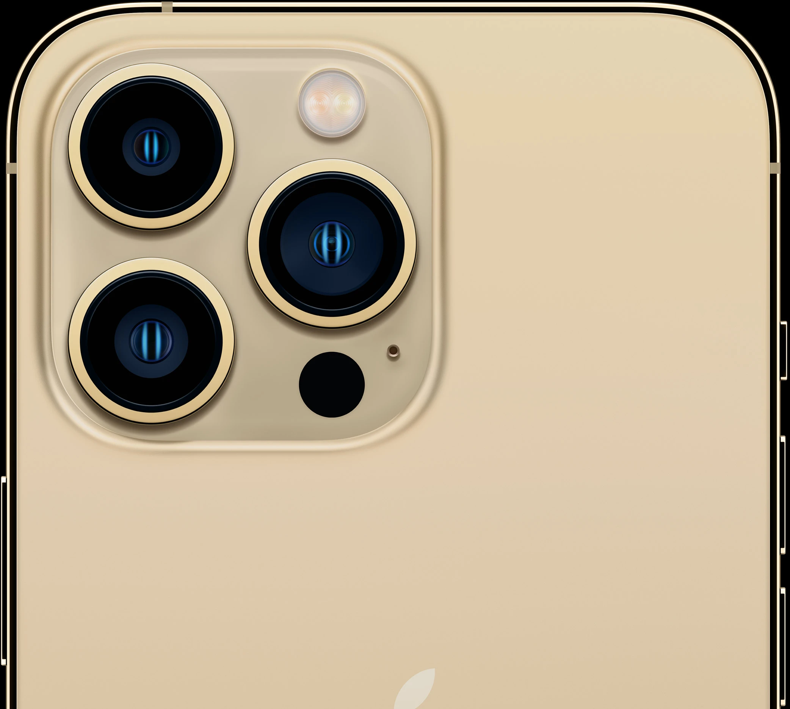
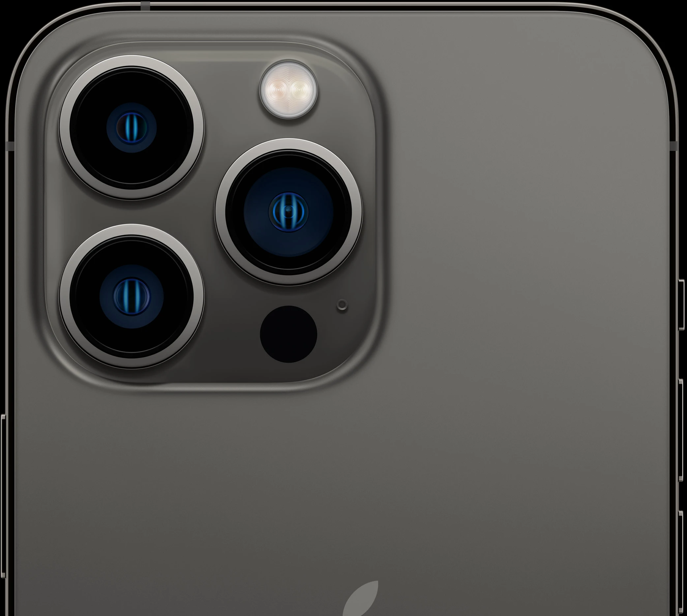
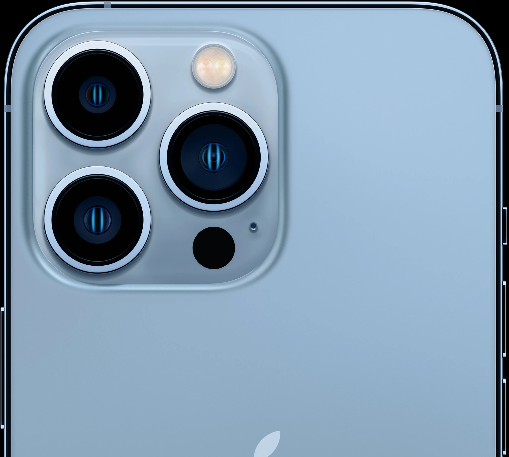
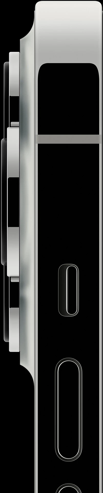
Surgical-grade
stainless steel
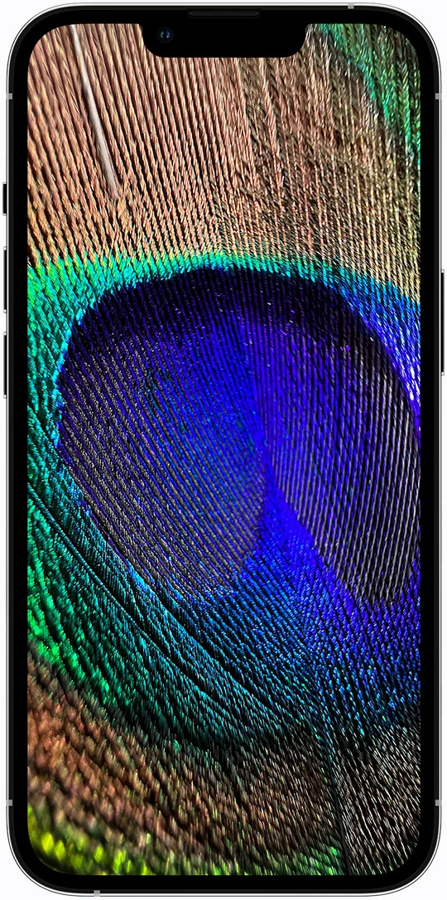
Ceramic Shield, tougher than
any smartphone glass
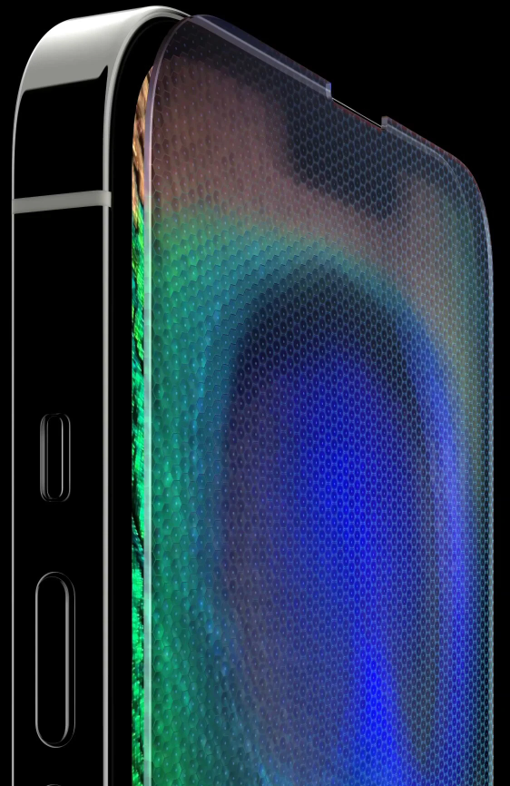
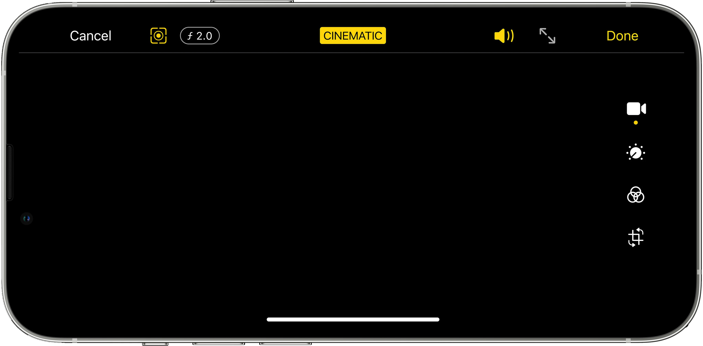
Now iPhone can shoot with shallow depth of field and automatically add elegant focus transitions between subjects. Cinematic mode can also anticipate when a prominent new subject is about to enter the frame and bring them into focus when they do, for far more creative storytelling. You have the option to change focus or adjust the level of bokeh even after capture. We can’t wait to see what you do with it.
- The only smartphone that lets you edit the depth effect after you shoot
- Shoot with the Wide, Telephoto or TrueDepth camera in Cinematic mode
- Cinematic mode supports
Dolby Vision HDR